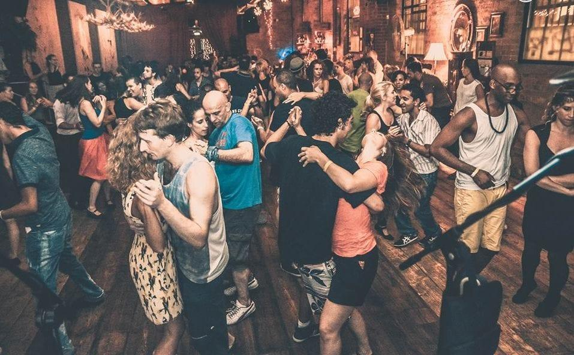
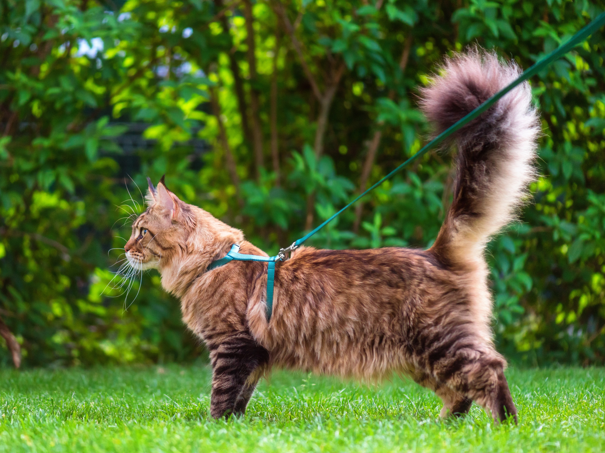
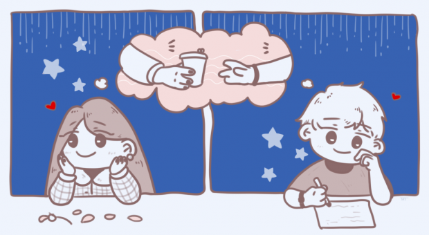

Bug infernal
Depois de 5h e ter chorado só 3 vezes consegui resolver o bug infernal!
#Hacker #DeviaTerChamadoOsMonitoresMaisCedo
Primeiro dia de aula
Hoje foi o primeiro dia de aula do Bootcamp e a aula do Pedrão é sensacional!
#DevJunin

Saudades de uma aglomeração
Hoje foi dia de sentir saudades de uma boa aglomeração e de um forrozinho
#VacinaSim #Forró

Voltinha na praça
Tem um bom tempo que as pracinhas estão fechadas e não consigo passear com o Toninho ☹️
#VírusMaldito
Já faz 84 anos
Que vontade de viajar! Nem lembro como é o som das ondas quebrando
#AlguémQueTenhaCasaNaPraiaChamaOProdutorDeConteúdoPorFavorzinhoSouCovidFreePrometo

A crush me reparou
A crush finalmente me reparou 😍
#Emocionado